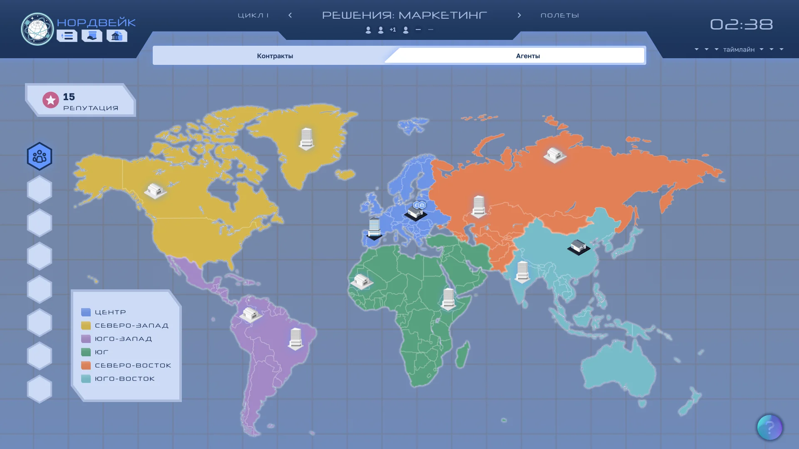
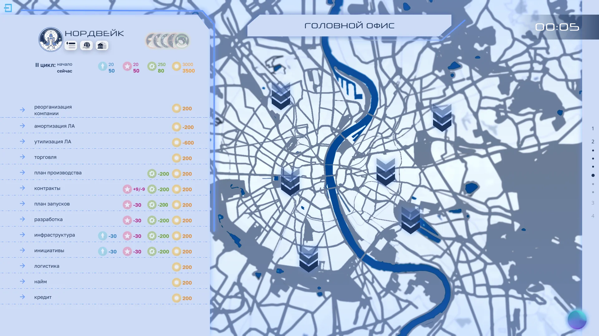
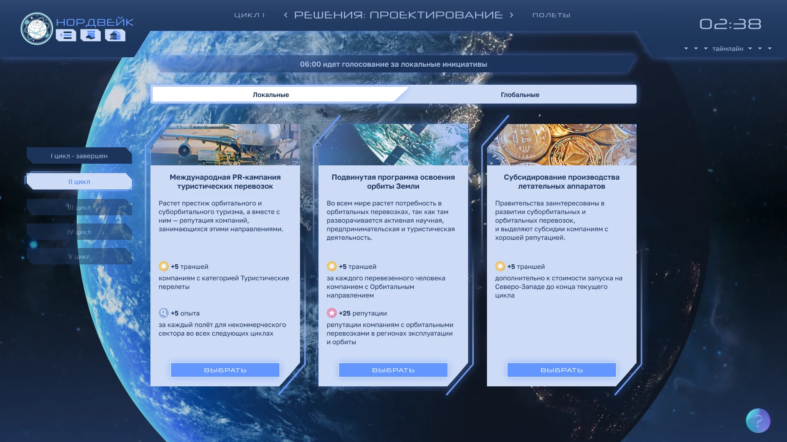
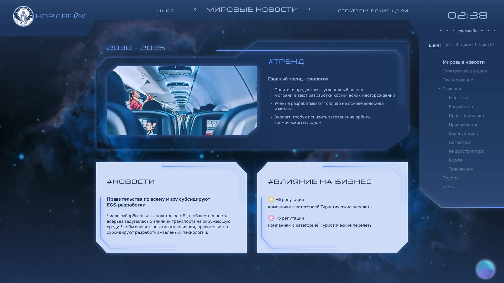
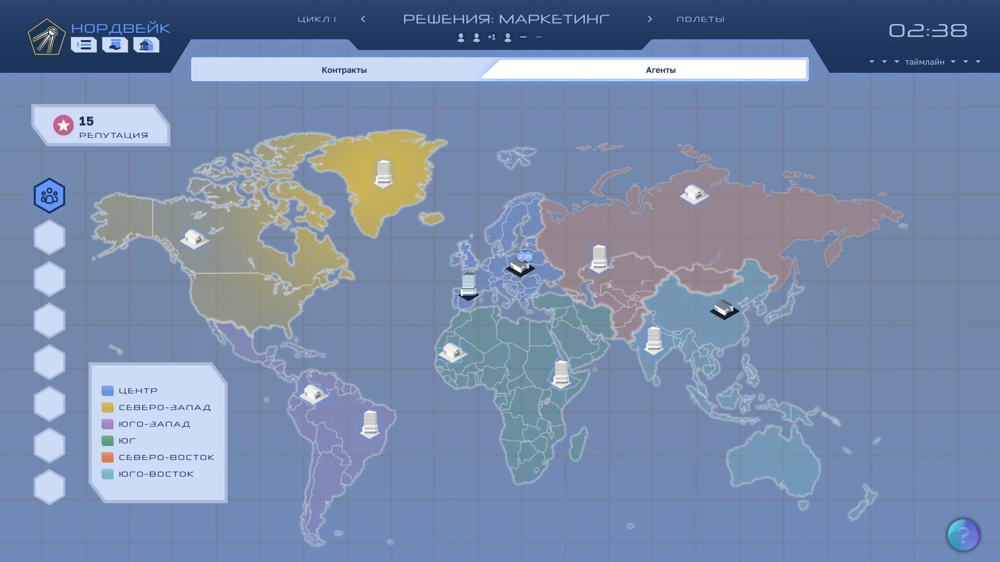

Run & Change —
управление эффективностью
Run & Change —
efficiency under change
Бизнес-симуляция на Unity для топ-менеджеров РЖД. Игроки разделены на два контура: Run (ежедневная операционка) и Change (трансформация). Их решения связаны — невозможно «улучшить будущее», не управляя настоящим. A Unity business simulation for Russian Railways top-managers. Players are split between two loops: Run (daily operations) and Change (transformation). Their decisions are coupled — you can't "improve the future" without managing the present.
КонтекстContext
Типичная боль больших корпораций: команды «операционки» и «трансформации» работают параллельно и обвиняют друг друга. Операционка тормозит изменения, изменения ломают операционку.
РЖД нужна была симуляция, которая бы не читала лекцию «как правильно управлять изменениями», а дала бы топ-менеджерам лично почувствовать эту связь — через решения, которые они принимают в паре руководителей Run и Change.
A classic large-corporation pain: "operations" and "transformation" teams run in parallel and blame each other. Operations slow change down; change breaks operations.
Russian Railways needed a simulation that didn't lecture about change management but let top-managers personally feel the coupling — through decisions they make as a Run/Change leadership pair.
Моя рольMy role
Я был Директором игры — руководил командой из 16 человек: геймдизайн, арт, Unity-разработка, нарратив, методология, фасилитация.
Что конкретно сделал:
- Сформулировал концепцию двух контуров и правила их взаимного влияния.
- Спроектировал экономику симуляции: ресурсы, KPI, «накопление долга» между Run и Change.
- Провёл пилот в Miro — дешёвая настольная версия для проверки механик до разработки на Unity.
- Руководил командой разработки: постановка задач, ревью прототипов, приоритизация, релиз-циклы.
- Участвовал в первых проведениях как фасилитатор — собирал обратную связь, вносил правки в баланс.
I was Game Director — leading a 16-person team across game design, art, Unity engineering, narrative, methodology, and facilitation.
Specifically, I:
- Defined the two-loop concept and the rules of mutual influence.
- Designed the simulation economy: resources, KPIs, "debt accumulation" between Run and Change.
- Ran a Miro pilot — a cheap board version to validate mechanics before Unity development.
- Led the development team: task definition, prototype reviews, prioritization, release cycles.
- Facilitated early runs myself — collected feedback and tuned balance.
Ключевые решенияKey decisions
Тема — небо, не рельсы. Клиент отдельно попросил не эксплуатировать тему железной дороги. Транспорт остался, но мы перенесли его «с земли в небо»: игроки развивают аэрокосмическую транспортную империю на Земле и в космосе. Получается, что менеджеры РЖД учатся через нестандартную для себя оптику — это снимает корпоративную броню и включает игровое мышление.
Структура: 5 циклов, 2–6 компаний, галактический тендер. В сессии 2–6 команд работают как компании одного холдинга. Они разрабатывают и строят летательные аппараты, развивают логистику и инфраструктуру, занимаются маркетингом и исследованиями. Цель за 5 циклов — выстроить процессы между всеми компаниями и выиграть «галактический тендер». Всё это — в условиях изменений, конкуренции и ограниченных ресурсов.
Пилот в Miro до Unity. Сэкономили пару месяцев разработки — ключевые механики «поломались» уже на настолке, и мы переделали их до дорогой продакшн-фазы.
Асимметричные роли. Run-руководитель и Change-руководитель видят разные показатели, говорят на разных «языках». Симуляция заставляет их учиться переводить — это и есть обучающая цель.
Долг как механика. Если Run режет ресурсы под операционку — Change накапливает технический долг. Если Change слишком агрессивен — Run срывает KPI. Игроки видят это через прозрачную визуализацию «долга», а не через нотации тренера.
Земля, которая дышит. В Unity-версии добавили иммерсивное изображение Земли, которое масштабируется в зависимости от показателей компаний. Игроки буквально видят, как их решения «растягивают» планету — это то, что не работало бы в Miro и оправдало переход на движок.
Sky, not rails. The client explicitly asked us not to lean on the railway theme. We kept transport but moved it "from earth to sky": players run an aerospace transport empire on Earth and in space. RZD managers end up learning through an optic foreign to their day job — that strips the corporate armor and switches on game thinking.
Structure: 5 cycles, 2–6 companies, a galactic tender. A session has 2–6 teams running as companies inside one holding. They develop and build aircraft, grow logistics and infrastructure, run marketing and research. Their goal across 5 cycles — build cross-company processes and win the "galactic tender". All under change, competition, and resource constraints.
Miro pilot before Unity. Saved a couple of months of engineering — the critical mechanics broke on paper first, and we fixed them before the expensive production phase.
Asymmetric roles. The Run-leader and Change-leader see different metrics and speak different "languages". The simulation forces them to translate — that is the learning objective.
Debt as a mechanic. If Run cuts resources under operations, Change accumulates technical debt. If Change is too aggressive, Run misses KPIs. Players see this through a transparent debt visualization, not trainer lectures.
Earth that breathes. In the Unity version we added an immersive Earth image that scales based on company performance. Players literally watch their decisions stretch the planet — something that wouldn't have worked in Miro and justified the engine switch.
Результаты Results
Что говорили участникиPlayer feedback
«Больше всего радует то, что можно создавать партнёрства и видеть от них финансовый результат, так как если в игре не вступаешь в сотрудничество, все недополучают результат. Возникает вера в свои возможности».
«Сожалею, что в реальности нет таких партнёрских отношений между подразделениями, и получаю удовольствие от возможности хотя бы в игре получить такой опыт доверия, сотрудничества, сотворчества, создания бизнес-результата — и перенести этот опыт в жизнь».
— Из отзывов участников программы РЖД, опубликованных Center-Game.
"What I like most is that you can build partnerships and see a financial result from them — because in the game, if you don't cooperate, everyone gets less. You start to believe in your own capacity."
"I regret that there are no such partnerships between departments in reality. I'm enjoying the chance to get this experience of trust, cooperation, co-creation, of building a business result — even if only in the game — and to bring it back to work."
— From RZD program participants, as published by Center-Game.
Скриншоты и фото Screenshots and photos







Что узналTakeaways
Самый полезный урок — пилот в дешёвом формате экономит десятки человеко-недель в Unity. Мы перерабатывали ядро механики в Miro за неделю, а то же самое в Unity стоило бы месяца-полтора.
Второе: роль Директора игры на проекте 16 человек — это 70% коммуникации и 30% геймдизайна. Принял это как факт и сразу выстроил регулярные ревью-циклы.
Biggest takeaway — a cheap-format pilot saves tens of person-weeks of Unity work. We reworked the mechanical core in Miro in a week; the same rework inside Unity would have cost a month and a half.
Second: being Game Director on a 16-person project is 70% communication and 30% game design. Accepted that early and set up regular review cycles from day one.
Авито · Урок Цифры → Avito · Digital Lesson →
15 геймплеев. Миллионы школьников. 15 gameplays. Millions of students.